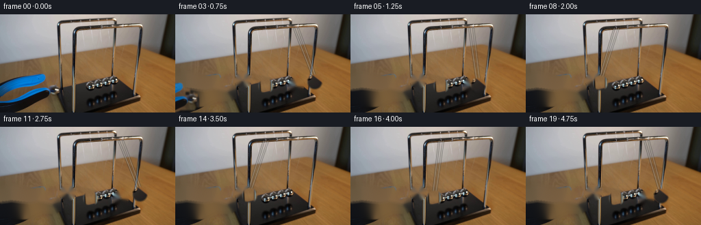
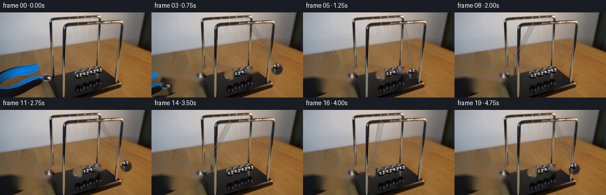
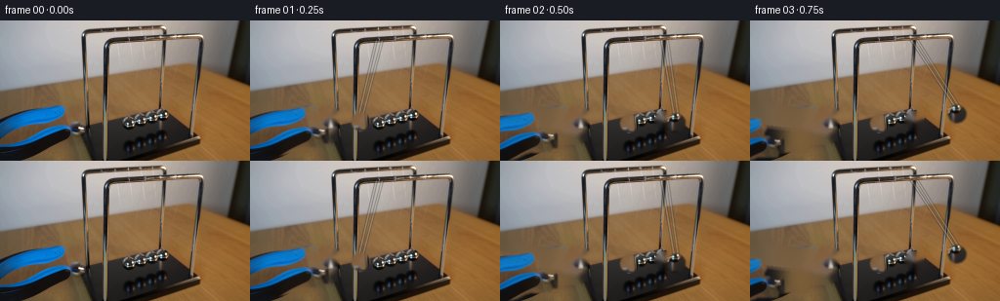

CODING AGENTS AS PIXEL WORLD MODELS
traex/GPT-5.6-Sol · 0160
点击播放 · 原生 RGB 像素
逐轮保存的候选
回放视频、检查图与代码变化。
每份候选均可单独播放。实际图片检查记录在下方工具轨迹中。
候选 01播放与检查图
点击播放 · 原生 RGB 像素

展开代码变化
--- 上一保存版本
+++ 本次保存版本
@@ -0,0 +1,181 @@
+from pathlib import Path
+import math
+import cv2
+import numpy as np
+from PIL import Image
+import artifact_io
+
+# The continuation is made as a small, deterministic 2-D photographic composite.
+# Geometry is measured in pixels from the supplied first frame.
+HERE = Path(__file__).resolve().parent
+src = np.asarray(Image.open(HERE / "first_frame.png").convert("RGB"), dtype=np.uint8)
+H, W = src.shape[:2]
+
+
+def feathered_disc(cx, cy, radius, feather=1.35):
+ yy, xx = np.mgrid[:H, :W]
+ d = np.sqrt((xx-cx)**2 + (yy-cy)**2)
+ return np.clip((radius + feather - d) / (2*feather), 0.0, 1.0).astype(np.float32)
+
+
+def shifted_rgb_alpha(rgb, alpha, dx, dy):
+ M = np.float32([[1, 0, dx], [0, 1, dy]])
+ rr = cv2.warpAffine(rgb, M, (W, H), flags=cv2.INTER_LINEAR,
+ borderMode=cv2.BORDER_CONSTANT, borderValue=(0, 0, 0))
+ aa = cv2.warpAffine(alpha, M, (W, H), flags=cv2.INTER_LINEAR,
+ borderMode=cv2.BORDER_CONSTANT, borderValue=0)
+ return rr, aa
+
+
+def over(dst, fg, a):
+ a = a[..., None].astype(np.float32)
+ return np.clip(dst.astype(np.float32)*(1-a) + fg.astype(np.float32)*a, 0, 255).astype(np.uint8)
+
+
+def inpaint_rgb(im, mask, radius=4):
+ return cv2.cvtColor(cv2.inpaint(cv2.cvtColor(im, cv2.COLOR_RGB2BGR),
+ (mask > 0).astype(np.uint8)*255,
+ radius, cv2.INPAINT_TELEA), cv2.COLOR_BGR2RGB)
+
+# The released (left) ball and the end (right) ball. Circular cutouts retain
+# the real steel reflections, edge fringe, and camera grain from frame zero.
+left0 = (98.5, 96.5)
+left_rest = (132.0, 104.5)
+right0 = (176.0, 104.5)
+rad = 10.7
+left_alpha = feathered_disc(*left0, rad)
+right_alpha = feathered_disc(*right0, rad)
+left_rgb = src.copy()
+right_rgb = src.copy()
+
+# Plates with just the relevant sphere removed. A slightly larger hard mask
+# takes away the original silhouette/shadow before the cutout is moved.
+ml = (feathered_disc(*left0, rad+1.3, .25) > 0).astype(np.uint8)
+mr = (feathered_disc(*right0, rad+1.3, .25) > 0).astype(np.uint8)
+no_left = inpaint_rgb(src, ml, 4)
+no_right = inpaint_rgb(src, mr, 4)
+no_ends = inpaint_rgb(no_left, mr, 4)
+
+# Isolate the blue-black grabber by chroma, then include its immediately
+# adjacent dark jaws. Reconstruction is deliberately constrained to the
+# lower-left tool corridor so the table and cradle are never selected.
+r, g, b = [src[..., k].astype(np.int16) for k in range(3)]
+gray = cv2.cvtColor(src, cv2.COLOR_RGB2GRAY)
+blue = ((b-r > 28) & (b-g > 11) & (np.indices((H,W))[0] > 76) &
+ (np.indices((H,W))[1] < 108)).astype(np.uint8)
+# Keep the two large blue components only.
+n, lab, stats, _ = cv2.connectedComponentsWithStats(blue, 8)
+seed = np.zeros_like(blue)
+for j in range(1, n):
+ if stats[j, cv2.CC_STAT_AREA] > 80:
+ seed[lab == j] = 1
+Y, X = np.mgrid[:H, :W]
+corridor = (X < 111) & (Y > 79) & (Y < 136) & (Y > 78 + .23*X)
+candidate = corridor & ((gray < 104) | ((b-r) > 13))
+tool = seed.copy()
+for _ in range(11):
+ tool = (cv2.dilate(tool.astype(np.uint8), np.ones((3,3),np.uint8)) > 0) & candidate
+ tool |= seed.astype(bool)
+tool = tool.astype(np.uint8)
+tool = cv2.morphologyEx(tool, cv2.MORPH_CLOSE, np.ones((5,5), np.uint8))
+# Don't absorb the metal ball itself into the gripper layer.
+tool[left_alpha > .12] = 0
+tool_soft = cv2.GaussianBlur(tool.astype(np.float32), (0,0), 1.0)
+tool_soft = np.clip(tool_soft, 0, 1)
+clean_tool = inpaint_rgb(src, cv2.dilate(tool, np.ones((7,7),np.uint8)), 6)
+
+
+def wire(frame, p0, p1, opacity=.56):
+ """Sub-pixel-looking steel suspension wire with a dark and bright edge."""
+ layer = frame.copy()
+ x0,y0 = p0; x1,y1 = p1
+ cv2.line(layer, (int(round(x0)),int(round(y0))),
+ (int(round(x1)),int(round(y1))), (43,42,40), 2, cv2.LINE_AA)
+ cv2.line(layer, (int(round(x0)),int(round(y0))),
+ (int(round(x1)),int(round(y1))), (178,174,166), 1, cv2.LINE_AA)
+ return cv2.addWeighted(layer, opacity, frame, 1-opacity, 0)
+
+
+def ball_layer_at(texture, alpha, source_center, center):
+ dx = center[0] - source_center[0]
+ dy = center[1] - source_center[1]
+ return shifted_rgb_alpha(texture, alpha, dx, dy)
+
+
+def dynamics(t):
+ """Ideal equal-mass Newton cradle, softened at impacts for a filmed demo."""
+ A = 0.505 * math.exp(-0.045*t)
+ drop = 0.43
+ half_swing = 0.92 # apex halfway through each out-and-back swing
+ if t < drop:
+ # smooth release from rest: left sphere falls toward the pack
+ u = t/drop
+ th_l = -A * 0.5*(1 + math.cos(math.pi*u))
+ return th_l, 0.0, 'left'
+ q = int((t-drop)//half_swing)
+ u = ((t-drop) - q*half_swing)/half_swing
+ pulse = math.sin(math.pi*u)
+ if q % 2 == 0:
+ return 0.0, A*pulse, 'right'
+ return -A*pulse, 0.0, 'left'
+
+frames = [src.copy()]
+L = 65.0
+pivot_y = left_rest[1] - L
+
+for fi in range(1, 20):
+ t = fi / 4.0
+ th_l, th_r, moving = dynamics(t)
+ # Endpoint positions from a common pendulum length.
+ lp = (left_rest[0] + L*math.sin(th_l), pivot_y + L*math.cos(th_l))
+ rp = (right0[0] + L*math.sin(th_r), pivot_y + L*math.cos(th_r))
+
+ # Choose a plate which removes only the sphere(s) that actually relocate.
+ left_moved = abs(lp[0]-left0[0]) > .8 or abs(lp[1]-left0[1]) > .8
+ right_moved = abs(th_r) > .012
+ if left_moved and right_moved:
+ frame = no_ends.copy()
+ elif left_moved:
+ frame = no_left.copy()
+ elif right_moved:
+ frame = no_right.copy()
+ else:
+ frame = src.copy()
+
+ # The operator lets go and withdraws the tool smoothly to lower left.
+ # Replace its original pixels with a clean plate, then lay its real pixels
+ # back at the receding location for the first second.
+ withdraw = min(1.0, t / 1.12)
+ frame = over(frame, clean_tool, tool_soft)
+ if withdraw < .999:
+ ease = withdraw*withdraw*(3-2*withdraw)
+ dx, dy = -74*ease, 17*ease
+ trgb, ta = shifted_rgb_alpha(src, tool_soft*(1-withdraw*.30), dx, dy)
+ frame = over(frame, trgb, ta)
+
+ # Fine suspension wires follow only the two active endpoint balls. The
+ # small anchor split suggests the cradle's bifilar suspension.
+ if abs(th_l) > .02:
+ frame = wire(frame, (left_rest[0]-2.7, 20), (lp[0]-2.0, lp[1]-6.2), .38)
+ frame = wire(frame, (left_rest[0]+3.0, 20), (lp[0]+2.0, lp[1]-6.2), .33)
+ if abs(th_r) > .02:
+ frame = wire(frame, (right0[0]-3.0, 20), (rp[0]-2.0, rp[1]-6.2), .38)
+ frame = wire(frame, (right0[0]+3.0, 20), (rp[0]+2.0, rp[1]-6.2), .33)
+
+ # Restore/move the real photographed endpoint spheres. During right-side
+ # motion the released sphere is resting against the three middle spheres.
+ lfg, la = ball_layer_at(left_rgb, left_alpha, left0, lp)
+ frame = over(frame, lfg, la)
+ if right_moved:
+ rfg, ra = ball_layer_at(right_rgb, right_alpha, right0, rp)
+ frame = over(frame, rfg, ra)
+
+ # A very restrained contact shadow grounds any sphere displaced over the
+ # warm table; keep it behind/under the ball and nearly transparent.
+ # (Most of the original shadow is already present in the photographed cutout.)
+ frames.append(frame.astype(np.uint8))
+
+frames = np.stack(frames, axis=0).astype(np.uint8)
+# Contract invariant: no processing at all is allowed on the first image.
+frames[0] = src
+artifact_io.save(frames, HERE)
候选 02播放与检查图
点击播放 · 原生 RGB 像素

展开代码变化
--- 上一保存版本
+++ 本次保存版本
@@ -39,10 +39,10 @@
# The released (left) ball and the end (right) ball. Circular cutouts retain
# the real steel reflections, edge fringe, and camera grain from frame zero.
-left0 = (98.5, 96.5)
-left_rest = (132.0, 104.5)
-right0 = (176.0, 104.5)
-rad = 10.7
+left0 = (82.0, 99.0)
+left_rest = (132.0, 105.0)
+right0 = (168.0, 103.0)
+rad = 9.4
left_alpha = feathered_disc(*left0, rad)
right_alpha = feathered_disc(*right0, rad)
left_rgb = src.copy()
@@ -120,7 +120,7 @@
return -A*pulse, 0.0, 'left'
frames = [src.copy()]
-L = 65.0
+L = 104.0
pivot_y = left_rest[1] - L
for fi in range(1, 20):
候选 03播放与检查图
点击播放 · 原生 RGB 像素


展开代码变化
--- 上一保存版本
+++ 本次保存版本
@@ -133,14 +133,10 @@
# Choose a plate which removes only the sphere(s) that actually relocate.
left_moved = abs(lp[0]-left0[0]) > .8 or abs(lp[1]-left0[1]) > .8
right_moved = abs(th_r) > .012
- if left_moved and right_moved:
- frame = no_ends.copy()
- elif left_moved:
- frame = no_left.copy()
- elif right_moved:
- frame = no_right.copy()
- else:
- frame = src.copy()
+ # Once released, the left endpoint belongs at the resting contact point,
+ # not at its original held-apart location, so its original image is always
+ # removed. The right cutout is additionally removed only while swinging.
+ frame = no_ends.copy() if right_moved else no_left.copy()
# The operator lets go and withdraws the tool smoothly to lower left.
# Replace its original pixels with a clean plate, then lay its real pixels
可观测工具轨迹
实际执行的命令与返回图片。
命令 1exit 0
/bin/bash -lc "cat GENERATION_RULES.md && printf '\\n---PROMPT---\\n' && cat prompt.txt"
命令 2exit 0
/bin/bash -lc "find . -maxdepth 2 -type f -printf '%p\\n' | sort && printf '\\n---TOOLS---\\n' && which ffmpeg python3 convert magick || true"
命令 3exit 0
/bin/bash -lc "python3 - <<'PY'
from PIL import Image
import numpy as np
im=np.array(Image.open('first_frame.png').convert('RGB'))
print(im.shape, im.dtype, im.min(),im.max(), im.mean((0,1)),im.std((0,1)))
# rows stats
for y in range(0,144,8): print('row',y,'mean',im[y:y+8].mean((0,1)).round(1),'std',im[y:y+8].std((0,1)).round(1))
# coarse blocks mean colors 12x16 (9x16 blocks)
for y in range(0,144,12):
print('Y',y, ['%02x%02x%02x'%tuple(im[y:y+12,x:x+16].mean((0,1)).astype(int)) for x in range(0,256,16)])
PY"命令 4exit 0
/bin/bash -lc "python3 - <<'PY'
try: import cv2; print('cv2',cv2.__version__)
except Exception as e: print(e)
from PIL import Image
import numpy as np
im=np.array(Image.open('first_frame.png').convert('RGB'))
# ascii grayscale + saturation at 4x4, chars dark-light
for mode in ['gray','edge','sat','blue']:
print('\\n',mode)
if mode=='gray': a=im.mean(2)
elif mode=='sat': a=im.max(2)-im.min(2)
elif mode=='blue': a=im[:,:,2]-im[:,:,:2].mean(2)
else:
g=im.mean(2); a=np.hypot(np.gradient(g,axis=0),np.gradient(g,axis=1))
for y in range(0,144,4):
s=''
for x in range(0,256,4):
v=a[y:y+4,x:x+4].mean()
if mode=='gray': chars=' .:-=+*#%@'; idx=np.clip(int(v/256*len(chars)),0,len(chars)-1)
elif mode=='blue': chars=' .:-=+*#%@'; idx=np.clip(int((v+60)/120*len(chars)),0,len(chars)-1)
else: chars=' .:-=+*#%@'; idx=np.clip(int(v/(120 if mode=='sat' else 60)*len(chars)),0,len(chars)-1)
s+=chars[idx]
print(s)
PY"命令 5exit 0
/bin/bash -lc "python3 - <<'PY'
import cv2, numpy as np
im=cv2.imread('first_frame.png')
g=cv2.cvtColor(im,cv2.COLOR_BGR2GRAY)
for p in [(1,15,8),(1,20,10),(1.2,18,7),(1.5,15,5)]:
c=cv2.HoughCircles(g,cv2.HOUGH_GRADIENT,dp=p[0],minDist=p[1],param1=80,param2=p[2],minRadius=5,maxRadius=22)
print(p, None if c is None else np.round(c[0],1).tolist())
# color/edge components on lower
for name,mask in [
('blue',(im[:,:,0].astype(int)-im[:,:,2]>30)&(im[:,:,0].astype(int)-im[:,:,1]>10)),
('dark',(g<55)),('edge',(cv2.Canny(g,50,120)>0))]:
m=(mask.astype(np.uint8)*255)
n,l,st,cent=cv2.connectedComponentsWithStats(m)
print('\\n',name)
for i in np.argsort(st[1:,4])[::-1][:20]+1:
if st[i,4]>3: print(st[i].tolist(),cent[i].round(1).tolist())
PY"命令 6exit 0
/bin/bash -lc "python3 - <<'PY'
from PIL import Image
import numpy as np, cv2
im=np.array(Image.open('first_frame.png'))
# grayscale chars for ROI 70:215 65:140 at 2px
for mode in ['gray','edge']:
print('\\n',mode)
g=cv2.cvtColor(im,cv2.COLOR_RGB2GRAY)
a=g if mode=='gray' else cv2.Canny(g,40,100)
chars=' .:-=+*#%@'
for y in range(60,144,2):
line=''
for x in range(65,215,2):
v=a[y:y+2,x:x+2].mean()
line+=chars[min(9,int(v/256*10))]
print(f'{y:03}',line)
PY"命令 7exit 0
/bin/bash -lc "python3 - <<'PY'
import cv2,numpy as np
im=cv2.imread('first_frame.png'); g=cv2.cvtColor(im,cv2.COLOR_BGR2GRAY)
for name,a in [('gray',g),('edge',cv2.Canny(g,30,80))]:
print('\\n',name)
# 2x1 blocks, x 0-110
chars=' .,:;irsXA253hMHGS#9B&@'
for y in range(76,125):
s=''
for x in range(0,110,2):
v=a[y,x:x+2].mean(); s+=chars[min(len(chars)-1,int(v/256*len(chars)))]
print(f'{y:03} {s}')
PY"命令 8exit 0
/bin/bash -lc "python3 - <<'PY'
import cv2,numpy as np
im=cv2.imread('first_frame.png'); g=cv2.cvtColor(im,cv2.COLOR_BGR2GRAY); e=cv2.Canny(g,40,100)
for y in range(10,130,2):
# segments of edges x 70:215
xs=np.where(e[y,60:220]>0)[0]+60
seg=[]
if len(xs):
a=b=xs[0]
for x in xs[1:]:
if x>b+1: seg.append((a,b));a=x
b=x
seg.append((a,b))
print(y,seg)
PY"命令 9exit 0
/bin/bash -lc "python3 - <<'PY'
from PIL import Image
import numpy as np
im=np.array(Image.open('first_frame.png'))
# x0:120 y75:135, pixels 2x2 classify avg
for y in range(74,136,2):
s=''
for x in range(0,122,2):
c=im[y:y+2,x:x+2].mean((0,1)); r,g,b=c; mx=max(c); mn=min(c); v=(r+g+b)/3
if b-r>30 and b-g>8: z='B' if v>60 else 'b'
elif v<35:z='K'
elif v<60:z='d'
elif mx-mn<15 and v>170:z='W'
elif mx-mn<18 and v>115:z='S'
elif mx-mn<15:z='g'
elif r>b+30 and v>110:z='o'
elif r>b+20:z='w'
elif v>150:z='L'
elif v>100:z='m'
else:z='.'
s+=z
print(f'{y:03} {s}')
PY"命令 10exit 0
/bin/bash -lc "python3 - <<'PY'
import cv2,numpy as np
im=cv2.imread('first_frame.png'); g=cv2.cvtColor(im,cv2.COLOR_BGR2GRAY)
for par in range(5,18,2):
c=cv2.HoughCircles(g,cv2.HOUGH_GRADIENT,1,8,param1=100,param2=par,minRadius=7,maxRadius=12)
z=[] if c is None else [tuple(np.round(q,1)) for q in c[0] if 70<q[0]<210 and 85<q[1]<125]
print(par,z)
# Print RGB chars each pixel area x85-190 y88-120 based exact brightness
im=cv2.cvtColor(im,cv2.COLOR_BGR2RGB)
chars=' .,:;irsXA253hMHGS#9B&@'
for y in range(88,121):
s=''
for x in range(82,205):
r,g,b=im[y,x]; v=(int(r)+int(g)+int(b))/3
if int(b)-int(r)>35: c='U'
elif max(r,g,b)-min(r,g,b)<18: c=chars[min(len(chars)-1,int(v/256*len(chars)))]
elif v<50:c='k'
elif v<80:c='d'
elif v<120:c='w'
elif v<160:c='o'
else:c='L'
s+=c
print(f'{y:03}',s)
PY"命令 11exit 0
/bin/bash -lc "python3 - <<'PY'
from PIL import Image
import numpy as np,cv2
im=np.array(Image.open('first_frame.png').convert('RGB')); g=cv2.cvtColor(im,cv2.COLOR_RGB2GRAY)
for cx,cy in [(72,104),(78,104),(88,100),(97,98),(99,114),(120,108),(131,106),(143,102),(146,108),(155,106),(165,103),(174,104),(186,114)]:
Y,X=np.ogrid[:144,:256]; r=np.hypot(X-cx,Y-cy)
inside=im[r<8]; ring=im[(r>9)&(r<12)];
print((cx,cy),'in',inside.mean(0).round(0),inside.std().round(1),'ring',ring.mean(0).round(0),'edge',np.abs(inside.mean(0)-ring.mean(0)).round(0),'sat',np.mean(inside.max(1)-inside.min(1)).round(1))
PY"命令 12exit 0
/bin/bash -lc "python3 - <<'PY'
import cv2, numpy as np
im=cv2.imread('first_frame.png'); g=cv2.cvtColor(im,cv2.COLOR_BGR2GRAY).astype(float)
# circle boundary gradient inward/outward score
for r in [7,8,9,10,11,12]:
scores=[]
for cy in range(80,126):
for cx in range(20,211):
vals=[]
for th in np.linspace(0,2*np.pi,48,endpoint=False):
co,si=np.cos(th),np.sin(th)
x1=int(round(cx+(r-1)*co)); y1=int(round(cy+(r-1)*si))
x2=int(round(cx+(r+1)*co)); y2=int(round(cy+(r+1)*si))
vals.append(abs(g[y1,x1]-g[y2,x2]))
scores.append((np.mean(vals),cx,cy))
scores.sort(reverse=True)
out=[]
for z in scores:
if all((z[1]-q[1])**2+(z[2]-q[2])**2>36 for q in out): out.append(z)
if len(out)>=15:break
print('\\nr',r)
print([(round(s,1),x,y) for s,x,y in out])
PY"命令 13exit 0
/bin/bash -lc "sed -n '1,240p' artifact_io.py"
命令 14exit 1
/bin/bash -lc "cat > generate.py <<'PY'
from pathlib import Path
import math
import cv2
import numpy as np
from PIL import Image
import artifact_io
# The continuation is made as a small, deterministic 2-D photographic composite.
# Geometry is measured in pixels from the supplied first frame.
HERE = Path(__file__).resolve().parent
src = np.asarray(Image.open(HERE / \"first_frame.png\").convert(\"RGB\"), dtype=np.uint8)
H, W = src.shape[:2]
def feathered_disc(cx, cy, radius, feather=1.35):
yy, xx = np.mgrid[:H, :W]
d = np.sqrt((xx-cx)**2 + (yy-cy)**2)
return np.clip((radius + feather - d) / (2*feather), 0.0, 1.0).astype(np.float32)
def shifted_rgb_alpha(rgb, alpha, dx, dy):
M = np.float32([[1, 0, dx], [0, 1, dy]])
rr = cv2.warpAffine(rgb, M, (W, H), flags=cv2.INTER_LINEAR,
borderMode=cv2.BORDER_CONSTANT, borderValue=(0, 0, 0))
aa = cv2.warpAffine(alpha, M, (W, H), flags=cv2.INTER_LINEAR,
borderMode=cv2.BORDER_CONSTANT, borderValue=0)
return rr, aa
def over(dst, fg, a):
a = a[..., None].astype(np.float32)
return np.clip(dst.astype(np.float32)*(1-a) + fg.astype(np.float32)*a, 0, 255).astype(np.uint8)
def inpaint_rgb(im, mask, radius=4):
return cv2.cvtColor(cv2.inpaint(cv2.cvtColor(im, cv2.COLOR_RGB2BGR),
(mask > 0).astype(np.uint8)*255,
radius, cv2.INPAINT_TELEA), cv2.COLOR_BGR2RGB)
# The released (left) ball and the end (right) ball. Circular cutouts retain
# the real steel reflections, edge fringe, and camera grain from frame zero.
left0 = (98.5, 96.5)
left_rest = (132.0, 104.5)
right0 = (176.0, 104.5)
rad = 10.7
left_alpha = feathered_disc(*left0, rad)
right_alpha = feathered_disc(*right0, rad)
left_rgb = src.copy()
right_rgb = src.copy()
# Plates with just the relevant sphere removed. A slightly larger hard mask
# takes away the original silhouette/shadow before the cutout is moved.
ml = (feathered_disc(*left0, rad+1.3, .25) > 0).astype(np.uint8)
mr = (feathered_disc(*right0, rad+1.3, .25) > 0).astype(np.uint8)
no_left = inpaint_rgb(src, ml, 4)
no_right = inpaint_rgb(src, mr, 4)
no_ends = inpaint_rgb(no_left, mr, 4)
# Isolate the blue-black grabber by chroma, then include its immediately
# adjacent dark jaws. Reconstruction is deliberately constrained to the
# lower-left tool corridor so the table and cradle are never selected.
r, g, b = [src[..., k].astype(np.int16) for k in range(3)]
gray = cv2.cvtColor(src, cv2.COLOR_RGB2GRAY)
blue = ((b-r > 28) & (b-g > 11) & (np.indices((H,W))[0] > 76) &
(np.indices((H,W))[1] < 108)).astype(np.uint8)
# Keep the two large blue components only.
n, lab, stats, _ = cv2.connectedComponentsWithStats(blue, 8)
seed = np.zeros_like(blue)
for j in range(1, n):
if stats[j, cv2.CC_STAT_AREA] > 80:
seed[lab == j] = 1
Y, X = np.mgrid[:H, :W]
corridor = (X < 111) & (Y > 79) & (Y < 136) & (Y > 78 + .23*X)
candidate = corridor & ((gray < 104) | ((b-r) > 13))
tool = seed.copy()
for _ in range(11):
tool = (cv2.dilate(tool, np.ones((3,3),np.uint8)) > 0) & candidate
tool |= seed.astype(bool)
tool = tool.astype(np.uint8)
tool = cv2.morphologyEx(tool, cv2.MORPH_CLOSE, np.ones((5,5), np.uint8))
# Don't absorb the metal ball itself into the gripper layer.
tool[left_alpha > .12] = 0
tool_soft = cv2.GaussianBlur(tool.astype(np.float32), (0,0), 1.0)
tool_soft = np.clip(tool_soft, 0, 1)
clean_tool = inpaint_rgb(src, cv2.dilate(tool, np.ones((7,7),np.uint8)), 6)
def wire(frame, p0, p1, opacity=.56):
\"\"\"Sub-pixel-looking steel suspension wire with a dark and bright edge.\"\"\"
layer = frame.copy()
x0,y0 = p0; x1,y1 = p1
cv2.line(layer, (int(round(x0)),int(round(y0))),
(int(round(x1)),int(round(y1))), (43,42,40), 2, cv2.LINE_AA)
cv2.line(layer, (int(round(x0)),int(round(y0))),
(int(round(x1)),int(round(y1))), (178,174,166), 1, cv2.LINE_AA)
return cv2.addWeighted(layer, opacity, frame, 1-opacity, 0)
def ball_layer_at(texture, alpha, source_center, center):
dx = center[0] - source_center[0]
dy = center[1] - source_center[1]
return shifted_rgb_alpha(texture, alpha, dx, dy)
def dynamics(t):
\"\"\"Ideal equal-mass Newton cradle, softened at impacts for a filmed demo.\"\"\"
A = 0.505 * math.exp(-0.045*t)
drop = 0.43
half_swing = 0.92 # apex halfway through each out-and-back swing
if t < drop:
# smooth release from rest: left sphere falls toward the pack
u = t/drop
th_l = -A * 0.5*(1 + math.cos(math.pi*u))
return th_l, 0.0, 'left'
q = int((t-drop)//half_swing)
u = ((t-drop) - q*half_swing)/half_swing
pulse = math.sin(math.pi*u)
if q % 2 == 0:
return 0.0, A*pulse, 'right'
return -A*pulse, 0.0, 'left'
frames = [src.copy()]
L = 65.0
pivot_y = left_rest[1] - L
for fi in range(1, 20):
t = fi / 4.0
th_l, th_r, moving = dynamics(t)
# Endpoint positions from a common pendulum length.
lp = (left_rest[0] + L*math.sin(th_l), pivot_y + L*math.cos(th_l))
rp = (right0[0] + L*math.sin(th_r), pivot_y + L*math.cos(th_r))
# Choose a plate which removes only the sphere(s) that actually relocate.
left_moved = abs(lp[0]-left0[0]) > .8 or abs(lp[1]-left0[1]) > .8
right_moved = abs(th_r) > .012
if left_moved and right_moved:
frame = no_ends.copy()
elif left_moved:
frame = no_left.copy()
elif right_moved:
frame = no_right.copy()
else:
frame = src.copy()
# The operator lets go and withdraws the tool smoothly to lower left.
# Replace its original pixels with a clean plate, then lay its real pixels
# back at the receding location for the first second.
withdraw = min(1.0, t / 1.12)
frame = over(frame, clean_tool, tool_soft)
if withdraw < .999:
ease = withdraw*withdraw*(3-2*withdraw)
dx, dy = -74*ease, 17*ease
trgb, ta = shifted_rgb_alpha(src, tool_soft*(1-withdraw*.30), dx, dy)
frame = over(frame, trgb, ta)
# Fine suspension wires follow only the two active endpoint balls. The
# small anchor split suggests the cradle's bifilar suspension.
if abs(th_l) > .02:
frame = wire(frame, (left_rest[0]-2.7, 20), (lp[0]-2.0, lp[1]-6.2), .38)
frame = wire(frame, (left_rest[0]+3.0, 20), (lp[0]+2.0, lp[1]-6.2), .33)
if abs(th_r) > .02:
frame = wire(frame, (right0[0]-3.0, 20), (rp[0]-2.0, rp[1]-6.2), .38)
frame = wire(frame, (right0[0]+3.0, 20), (rp[0]+2.0, rp[1]-6.2), .33)
# Restore/move the real photographed endpoint spheres. During right-side
# motion the released sphere is resting against the three middle spheres.
lfg, la = ball_layer_at(left_rgb, left_alpha, left0, lp)
frame = over(frame, lfg, la)
if right_moved:
rfg, ra = ball_layer_at(right_rgb, right_alpha, right0, rp)
frame = over(frame, rfg, ra)
# A very restrained contact shadow grounds any sphere displaced over the
# warm table; keep it behind/under the ball and nearly transparent.
# (Most of the original shadow is already present in the photographed cutout.)
frames.append(frame.astype(np.uint8))
frames = np.stack(frames, axis=0).astype(np.uint8)
# Contract invariant: no processing at all is allowed on the first image.
frames[0] = src
artifact_io.save(frames, HERE)
PY
python3 generate.py
python3 - <<'PY'
import numpy as np
from PIL import Image
z=np.load('pixels.npz')['pixels']
a=np.array(Image.open('first_frame.png').convert('RGB'))
f=np.stack([np.array(Image.open(f'frames/{i:02}.png')) for i in range(20)])
print('shape',f.shape,f.dtype,'frame0 exact',np.array_equal(f[0],a))
print('changed pixels',[(i,int(np.any(f[i]"'!=f[i-1],axis=2).sum()),round(float(np.abs(f[i].astype(int)-f[i-1].astype(int)).mean()),2)) for i in range(1,20)])
PY'命令 15exit 0
/bin/bash -lc "python3 - <<'PY'
p='generate.py'
s=open(p).read().replace(\"tool = (cv2.dilate(tool, np.ones((3,3),np.uint8)) > 0) & candidate\\n tool |= seed.astype(bool)\",\"tool = (cv2.dilate(tool.astype(np.uint8), np.ones((3,3),np.uint8)) > 0) & candidate\\n tool |= seed.astype(bool)\")
open(p,'w').write(s)
PY
python3 generate.py
python3 - <<'PY'
import numpy as np
from PIL import Image
a=np.array(Image.open('first_frame.png').convert('RGB'))
f=np.stack([np.array(Image.open(f'frames/{i:02}.png')) for i in range(20)])
print('shape',f.shape,f.dtype,'frame0 exact',np.array_equal(f[0],a))
print('changed pixels',[(i,int(np.any(f[i]"'!=f[i-1],axis=2).sum()),round(float(np.abs(f[i].astype(int)-f[i-1].astype(int)).mean()),2)) for i in range(1,20)])
PY'命令 16exit 0
/bin/bash -lc "python3 - <<'PY'
from PIL import Image
im=Image.open('inspection.png')
# create nearest downsample impossible view; print file info and altered bboxes
import numpy as np
fs=[np.array(Image.open(f'frames/{i:02}.png')) for i in range(20)]
for i in range(1,20):
m=np.any(fs[i]"'!=fs[0],2); ys,xs=np.where(m)
print(i,(xs.min(),ys.min(),xs.max(),ys.max()),'"'vs0',m.sum())
PY
ls -lh inspection.png transition_check.png pixels.npz index.html frames/00.png generate.py"命令 17exit 0
/bin/bash -lc "python3 - <<'PY'
from PIL import Image
import numpy as np,cv2
im=np.array(Image.open('first_frame.png').convert('RGB')); gr=im.mean(2)
for cx,cy in [(98.5,96.5),(100,114),(132,104),(143,103),(154,103),(165,103),(176,104)]:
Y,X=np.mgrid[:144,:256]; d=np.hypot(X-cx,Y-cy)
print('\\n',cx,cy)
for r in range(0,16):
q=im[(d>=r)&(d<r+1)]; print(r, q.mean(0).round().astype(int),round(q.std(),1),end='; ')
print()
PY"命令 18exit 0
/bin/bash -lc "python3 generate.py && python3 - <<'PY'
import numpy as np
from PIL import Image
a=np.array(Image.open('first_frame.png').convert('RGB'))
f=np.stack([np.array(Image.open(f'frames/{i:02}.png')) for i in range(20)])
print('valid',f.shape,f.dtype,np.array_equal(f[0],a))
for i in range(20):
d=np.any(f[i]"'!=a,2); ys,xs=np.where(d)
print(i, 0 if not d.any() else d.sum(), None if not d.any() else (xs.min(),ys.min(),xs.max(),ys.max()))
PY'命令 19exit 0
/bin/bash -lc "python3 generate.py && python3 -m py_compile generate.py && python3 - <<'PY'
from PIL import Image
import numpy as np, json
f=np.stack([np.asarray(Image.open(f'frames/{i:02}.png').convert('RGB')) for i in range(20)])
s=np.asarray(Image.open('first_frame.png').convert('RGB'))
print(f.shape,f.dtype,'frame00 exact:',np.array_equal(f[0],s))
print('outputs:',*[p for p in ['pixels.npz','inspection.png','transition_check.png','index.html']])
print('frame means:',np.round(f.mean((1,2,3)),2).tolist())
PY"保存候选 3 份；完成命令 19 次；可验证图片返回 0 张。原始 API 响应与完整日志保留在本地。